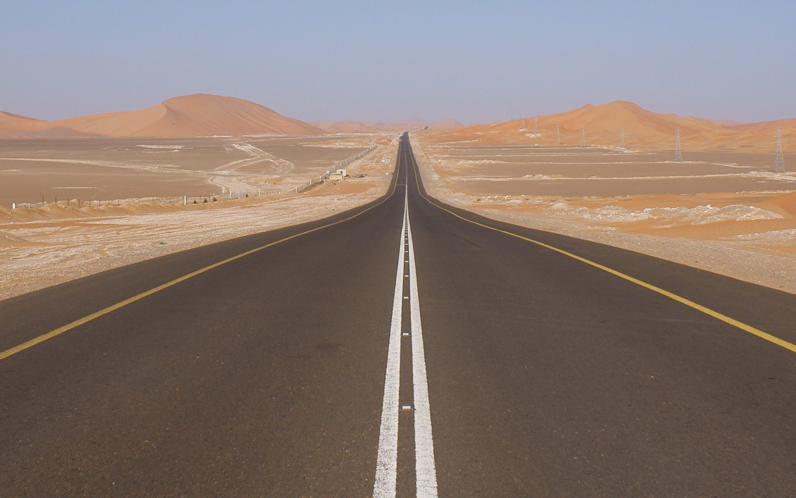
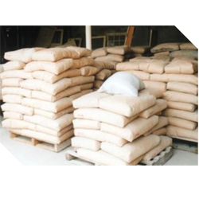
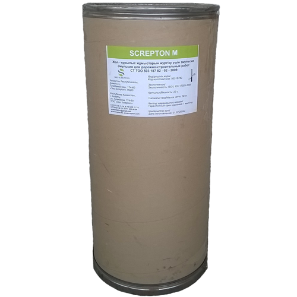
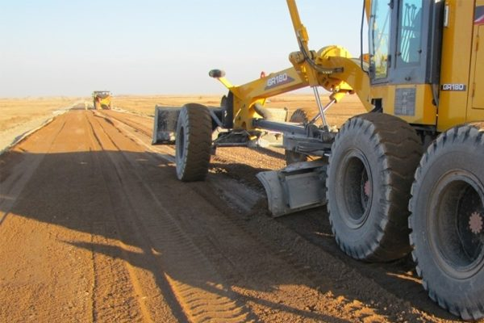
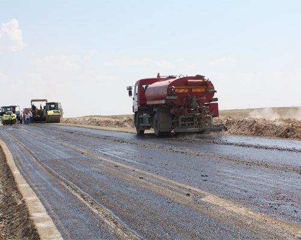
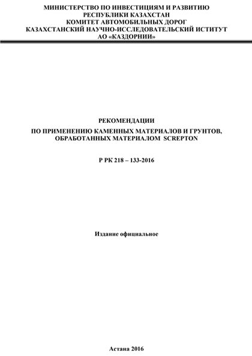
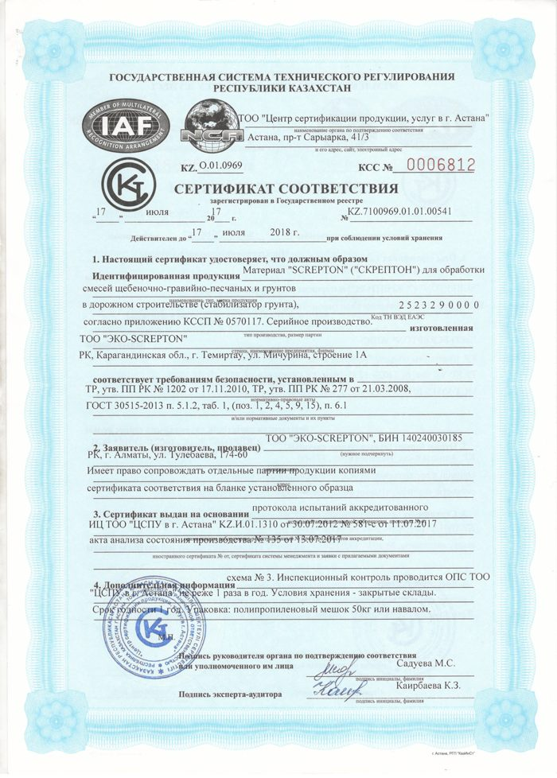
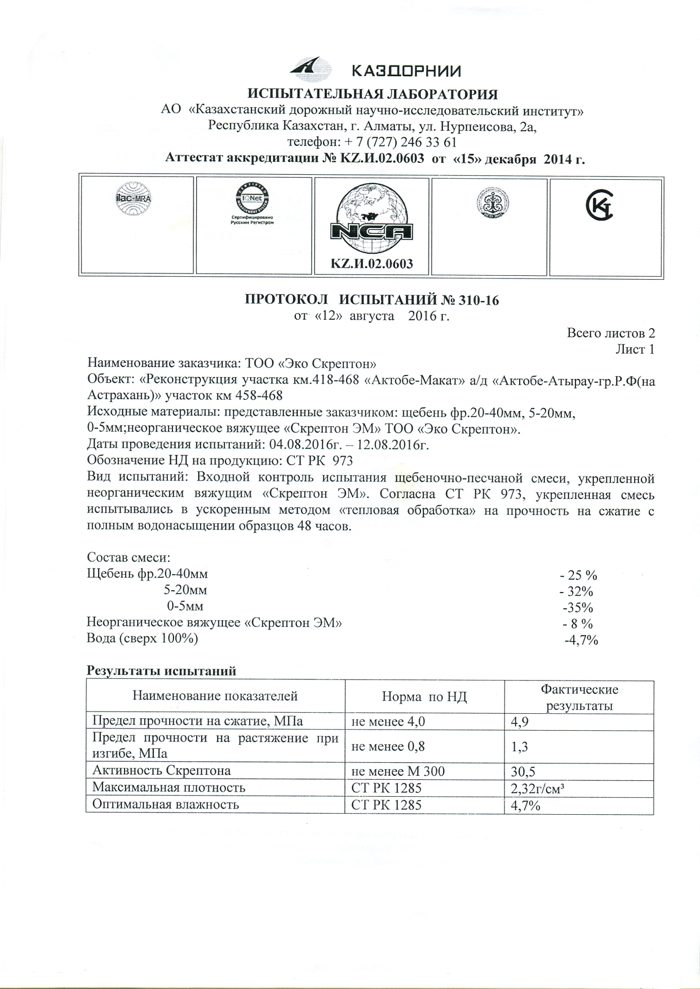
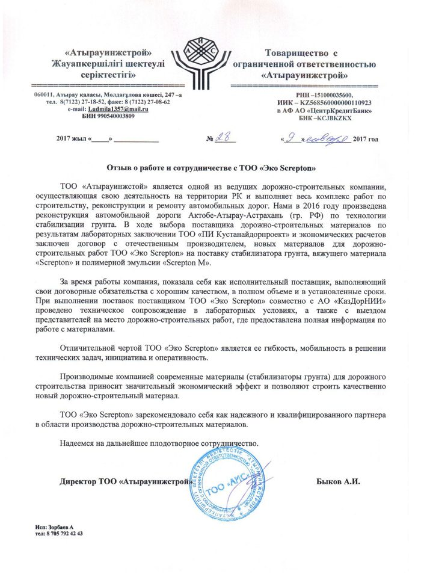

SCREPTON связывает местный грунт в основание прочностью до 21,7 МПа — без привозного щебня и трёх слоёв основания. Экономия до 30% сметы, рекомендации КаздорНИИ.
Расчёт по методике КаздорНИИ для участка трассы Актобе — Атырау. Наведите на слой, чтобы увидеть толщину.
Минус 4 слоя, минус привозной щебень, минус 2 проливки. Асфальт сверху остаётся тем же. Источник: буклет SCREPTON, расчёт по рекомендациям КаздорНИИ 2014 г.
Получить расчёт по моей ПСДНормы расхода на 1 м² из технологической карты SCREPTON. Расчёт ориентировочный — точный состав подбирает лаборатория по пробе грунта.
Дорожное полотно шириной 7 м: 10 000 м² ≈ 1,4 км дороги.
Цены на материалы и доставку в ваш регион пришлём сметой на почту в течение рабочего дня.

Неорганическое вяжущее

Полимерная эмульсия
Смесь готовят на дороге (Wirtgen WR, ДС-152, ДС-72) или в установке (ДС-50, КМА 220). Ничего специального покупать не нужно.
Снятие растительного слоя, уплотнение кулачковыми катками, разбивка ширины и уклонов.
Порошок SCREPTON вносят цементораспределителем ДС-72 или Wirtgen SW 16 TC.
Ресайклер за один проход перемешивает грунт, порошок и водный раствор SCREPTON-M.
Автогрейдер со следящей системой или укладчик. Коэффициент запаса 1,2–1,3.
Пневмокатки и виброкатки от краёв к середине, перекрытие следа 20–30 см, до 0,98 плотности.
Поливомоечная машина с гребёнкой держит влажность на 1–2% выше оптимальной.
Влажное твердение или сразу верхний конструктивный слой — и движение открыто.
Отбор проб методом лунок и режущего кольца, прочность по СТ РК 973-2015.

Стабилизация верхнего рабочего слоя основания на международной трассе. Экономия 53 млн ₸ против проектной конструкции.

Дорога для тяжёлого автотранспорта к месторождению, Акжайыкский район. Без асфальтового покрытия.
Стабилизация верхнего слоя методом ресайклирования, без асфальтового покрытия.
Первый объект. Стабилизация верхнего рабочего слоя существующей дороги на проблемном участке.
Alatau City строится с 2027 года по мастер-плану до 2055-го. Сотни километров улиц, промзон и подъездных дорог на новых грунтах. SCREPTON позволяет не везти щебень в предгорье, а связывать то, что уже на участке.




Полный пакет для проектировщика (рекомендации, сертификаты, протоколы, заключения НИИ) — одним архивом по запросу.
Опишите объект: регион, тип грунта, площадь или километраж. Инженер подберёт конструкцию и норму расхода, менеджер — цену и логистику.
Быстрее — в WhatsApp: +7 701 566 87 31
Офис: Астана, ЖМ Железнодорожный, ул. Ж. Жабаева, 76 · Производство: Темиртау, ул. Мичурина, 1А · green.roads@mail.ru